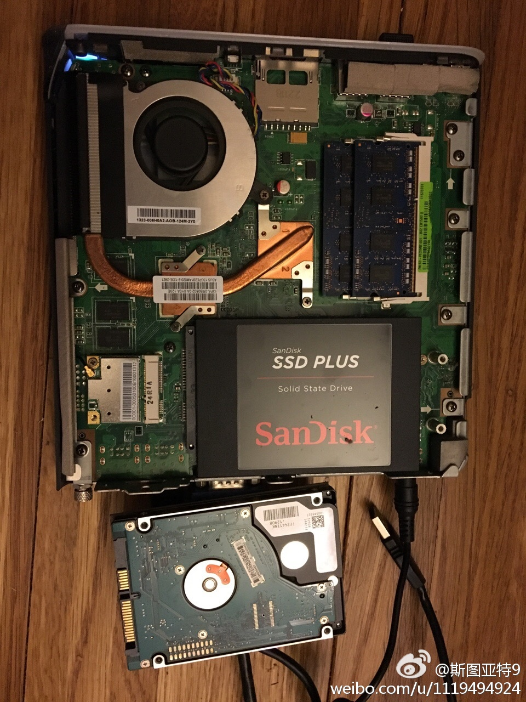

我家的“多媒体中心”——一台三年前买的华硕EEE Box，用来接电视放视频——又坏了。这次又搞了一整天没弄好，种种迹象让我严重怀疑是硬盘坏了。于是去商店买了个45美元的120GB SSD换上重装了系统，好像是可以用了！好久好久没干这种事了，能修好还感觉挺好的。 
那些几天前看到澳网一二号种子都早早淘汰，担心收视率和媒体关注度而高呼“假的澳网”的媒体们，肯定没有料到竟还有比他们心中的完美决赛小德对穆雷更完美的决赛对决。2016年是如此不堪回首的一年，但2017一开门就给我们希望：也许前面的失望是为了准备后面更好的。
英国首相梅在对美国共和党人的演讲中，着重阐述了联合国、其他世界组织和北约的重要性，并紧接着引用丘吉尔的话呼吁向全世界传播自由和民族的价值。在结尾她又再次重申了联合国和北约的重要性。她还表示英国会帮助海湾国家压制伊朗的扩张，但英国支持和伊朗达成的协议。这些都是和特朗普立场明确的分歧。不知道他们的对话有没有软化特朗普的立场。
除了勉强说100%支持北约之外，特朗普这个说法也是首次见到的：“But if we can have a great relationship with Russia and with China and with all countries, I'm all for that” 他把俄罗斯和中国并列，说都要搞好关系。这和他之前亲俄反华的口径不同。这葫芦里卖的是什么药？